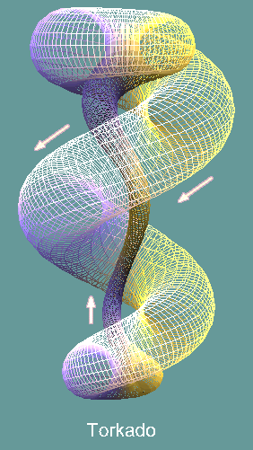
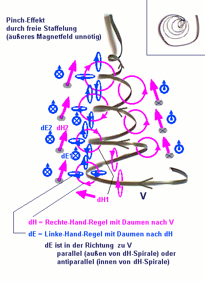

Im Einzelnen:
Entstehung eines Torkado
aus negativ geladenen Subsystemen (wie Elektronen)
(* bei positver
Ladung und Neutralität andere Drehrichtung ! *)
Hier
zunächst ein Versuch der qualitativen Erklärung (noch mit
der Kreise-Denkhilfe). Noch einmal zu Abb2.:

Abb.2
In der Mitte des
netzartig abgebildeten Schlauches befindet sich eine einzige Wirbelline
(Geschwindigkeit V) des Torkados. Er wird eigentlich von tausenden solcher
Linien gebildet und hat im Grunde die Form eines stehendem Eies. Die
netzartige Oberfläche, die hier die eine Wirbellinie umgibt, stellt
ungefähr die Lage des dazugehörigen Magnetfeldes dar. Man
kann auch sagen: Innerhalb dieses Schlauches bewegt sich eine rotierende
Masse und ein Oberflächenpunkt rollt irgendwo an diesem Netz ab,
während der Massenmittelpunkt eine geschlossene Spirale entlang
der Schlauchmitte ausführt (weiße Pfeile).
Im
nächsten Bild ist die untere Hälfte des
Aufstiegsabschnittes (schmaler Mittelschlauch, hier weniger steil) dargestellt.
Die Wirbellinie selbst ist grau, rot das Magnetfeld bzw. die Oberflächenrotation,
wenn entlang der Wirbellinie ein Körper mit Eigenrotation (Achse
in Flugrichtung) entlang gleitet. Blau ist die resultierende Kraftrichtung
aus beiden Einzelrotationen, die mit der grauen Wirbellinie wechselwirkt
und diese auf diesem Abschnitt positiv unterstützt (Text unten).

Spirale allein
Abb.3
Annahmen zur Startbedingung:
Koordinatensystem x, y, z mit z-Achse nach oben
Zu pumpende kraftausübende (asymmetrisch schwingende) Größe
C=(0, 0, -Cz),
d.h. Cz ist der Effektivwert, also C ist überwiegend nach unten gerichtet
.
Kurzzeitiges lokales paralleles Magnetfeld H=(0, 0, Hz) für den Start, d.h.
H nach oben (entgegen C) gerichtet.
Ein negativ geladenes Teilchen fliegt (vielleicht nach einem Stoß) nach
schräg oben hinein mit der Vektorgeschwindigkeit V=(Vx,Vy,Vz) , Vz>0 .
Das Teilchen trägt seinerseits ein magnetisches Feld, weil es geladen ist
und sich bewegt.
Die Bewegung des Teilchens wird i.A. eine Spirale.
Zur Übung: Betrachtung
zweier Spezialfälle
1) senkrechte Bewegung nach oben
Die Stromlinie V || Hz (->Vx=0,Vz=0, ExH=0), bleibt von der Richtung her
stabil, denn es bildet sich ein zusätzliches Magnetfeld dH um das bewegte
negative Teilchen in x-z-Ebene (Rechte Hand-Regel mit Daumen nach oben),
das den Betrag von Vz etwas verringert (Linke-Hand-Regel in dH-Kreisrichtung
ergibt innen ein negatives dEz).
Die beiden Magnetfelder kreuzen sich rechtwinklig, das Kreuzprodukt der
Kraft dF=HxdH weist immer nach innen, auf die senkrechte Teilchenbahn. Damit
genügt es, daß die Komponente Vz gegenüber Vx oder Vy überwiegt, um Vx und
Vy systematisch zu verkleinern (Pinch-Effekt), zugunsten von Vz.
Eine Selbstbeschleunigung nach oben existiert in dieser Einzelbetrachtung
noch nicht.
2) waagerechte Bewegung und schon vorhandener H-Vektor nach oben
Wenn Vz=0 (unterer Totpunkt, Südpol des Torkado), führt die Bewegung des
negativ geladenen Teilchens nach rechts in eine gekrümmte Bahn, denn das
magnetische Eigenfeld dH (Rechte-Hand-Regel, in Zeichnung rot) geht links
der Bahn nach oben und wird H verstärken, rechts der Bahn (innen) nach unten
und H wird abgeschwächen, denn die beschleunigende Kraft zeigt immer in
Richtung des schwächeren Magnetfeldes.
Das Vorgänger-Teilchen hat bereits einen kleineren Radius, und das betrachtete
Teilchen trifft von außen auf dessen dH-Schleppe (rot in Zeichnung, als
Kreis gesehen), die hier außen H-parallel nach oben gerichtet ist (--> weitere
Rechtsablenkung) und als Spirale gesehen (falls auch Vz>0) gleichzeitig
nach links (Folge ist dVz positiv).
Die Spezialfälle 1) und 2) kommen aber praktisch nicht vor. Erst in der
Kombination findet sich der eigentliche Antriebsmechanismus, der nach dem
Einschwingen kein äußeres H-Feld mehr braucht.
Dreidimensionale
selbststabilisierende Bewegung
a)
von unten nach innen Mitte
Jedes Teilchen hat Nachbarn und Vorgänger während des Fluges.
Zuerst wird die rückwärtige dH1-Wirbelschleppe gekreuzt, dessen dE1 in
Flugrichtung und nach oben beschleunigt (blaue Pfeile). Dann auf die außen
liegende Wirbelschleppe des Vorgängers, ebenfalls vorwärts und aufwärts
beschleunigend. (Auch Vogelschwärme ordnen sich am Himmel V-förmig an,
weil in der äußeren Wirbelschleppe ein nach oben gerichteter Kraftanteil
steckt.) Die Rechtsablenkung nimmt dadurch zu, der Radius verkleinert
sich, die Spirale führt immer weiter nach innen und gleichzeitig nach
oben, bis die Drehung zur Eigenrotation geworden ist (Uhrzeigersinn von
oben betrachtet). Der 3D-Impuls bleibt erhalten, aber der Drehimpuls der
x-y-Ebene wird nur geringfügig in eine größere Winkelgeschwindigkeit
überführt, weil sich der Zuwachs gleichzeitig für den Aufbau
der Vz-Komponente verbraucht.
b) von Mitte nach außen oben
Haben viele benachbarte Teilchen gleichzeitig dieses Schicksal, um sich
selbst drehend in der Mittellinie aufzusteigen, bilden sie durch ihre
rotierende Masse (nicht Ladung) einen rechtsläufigen Protonenwirbel, der
durch einen linksläufigen Elektronenwirbel (=Ätherströmung, sprich: Magnetfeld)
ausgeglichen werden wird. Dieser verstärkt den induzierten Magnetwirbel
der positiven Vz- Bewegung. Hier ist das Magnetfeld jedoch als primär
zu betrachten und es produziert wieder (Linke-Hand-Regel mit Daumen entlang
H-Linie) innen eine zusätzliche Bewegungskomponente in negativer Vz-Richtung.
Die Folge ist der entgegengesetzte Vorgang von a) : eine Vergrößerung
des Radius, ein Rückgang der Rechtsablenkung, ein Abbremsen der Eigenrotation.
Das betrachtete Teilchen trifft jetzt weiter innen auf die Wirbelschleppe
seines Vorgängers, wo dH sowieso nach unten gerichtet ist, das Bremsen
wird damit verstärkt, bis Vz = 0 ist (oberer Totpunkt am Nordpol) und
schließlich negativ wird.
Während dieser divergierenden Bewegung entsteht Abkühlung und ein Sog,
der in Phase a) der eigentliche Antrieb ist, nach oben zu steigen.
c) von oben nach außen unten
Die divergierende Bewegung (weg von der Hauptachse) führt zu einem negativen
dVz, und schließlich auch negativem Vz, weil jedes Teilchen seinen
Vorgänger von weiter innen aus "verfolgt" (Treffen der inneren Wirbelschleppe),
wo dE der Bewegung entgegen gerichtet ist . Das bleibt so auch bei der
anfänglichen äußeren Abwärtsbewegung: der Rotationsradius nimmt weiter
zu (Bildung des Nordpol-Pilzkopfes). Bis hierhin entsteht Sog, der rückwärts
die Mittelachse entlang bis hinunter in den Südpol wirkt.
Aber auf dem langsamen 'entspannten' Außenweg kommt wegen der längeren
Verweildauer der Überschuß des äußeren Energie-Inputs C ins Spiel. Diese
Komponente ist in der Steigphase auch vorhanden, würde dort bremsend
wirken, wenn es eine räumlich gleichverteilte statische Größe
wäre, und würde den Pumpeffekt verhindern, wenn Aufstieg und
Abstieg die gleiche Zeit dauern würde. Es ist aber nur der Effektivwert
einer dynamischen Größe, und zumindest die Torkadobewegung
"innen steil und schnell nach oben" muß mit der C-Schwingungsdynamik
synchron ablaufen, um in der kürzeren Halbwelle zu liegen, in der
das dynamische Cz dem Effektivwert (Mittelwert Cz über Zeit) entgegengerichtet
ist. Das bedeutet weitere Randbedingungen für die Strömungsgeschwindigkeit
V.
Die
Kraft Cz im Außenbereich überwiegt also bald das bremsende, nach oben
gerichtete dE. Das Divergieren hört auf und geht danach wieder in Radiusverkleinerung
über. Durch die C-Energieaufnahme und das Treffen der äußeren Wirbelschleppe
des enger kreisenden Vorgängers, setzt Beschleunigung nach unten und rechts
ein.
Aber noch bevor das Ganze pulsierend nach unten rasen kann (solche vorübergehenden
Formen werden auch beobachtet), wird der Sogbereich spürbar, den der Mittelkanal
ausübt. Er hat außen nach oben weisende dH2-Vektoren (rot in Zeichnung),
die das abwärtsweisende dH2 des Außenweges (nicht auf Zeichnung) bei Annäherung
kompensieren. Da sie nur während des innenliegenden Spiralenteiles wirken
können, wird gerade dort der 'Sturz' abgefangen, und durch den Sog wird
das negative Vz bis auf Null abgebremst und ins Positive gehoben. Der
Südpol wird nun durcheilt und weiter geht es drehbeschleunigt und sich
verengend nach innen und aufwärts, immer im 'dH-Windschatten' des Vorgängers.
Dieses Windschatten-Fliegen ermöglicht die große Reichweite
des im Nordpol erzeugten Soges. Der Abstand zwischen den Teilchen muß
also dH-Wellen-resonant sein, dann bewegt sich das Ganze im Block, erzeugt
ungeheure Ordnung und ist eine weitere Vorgabe für V.
Es muß trotzdem ein übergroßer Nordpol aufgebaut sein, damit der Sog ausreichend
groß ist, um noch im Südpol zu wirken. Das Teilchen wird nicht in den
Südpol hinein gedrückt, sondern hinein gesaugt. Und die Kunst des Anwerfens
der Torkado-Pumpe betrifft die ersten Teilchen, die dann ihre Wirbelschleppe
wie ein Abschleppseil für die Nachfolger darbieten.
Ist
der Nordpol kleiner als der Südpol, reicht der Sog nicht bis hinunter
in den Südpolbereich, und die Wiedereinkehr in den Südpol könnte scheitern.
Das Teilchen fällt am Südpol vorbei und der Torkado zerfällt. Damit ist
klar, daß hier eine Asymmetrie funktionell notwendig ist.
Weiteres
:
Applets für
Torus mit eiförmigem Schlauch:
http://www.alle24.de/archiv/4191.htm
Torkado
Meine Email-Adresse: info@aladin24.de
|